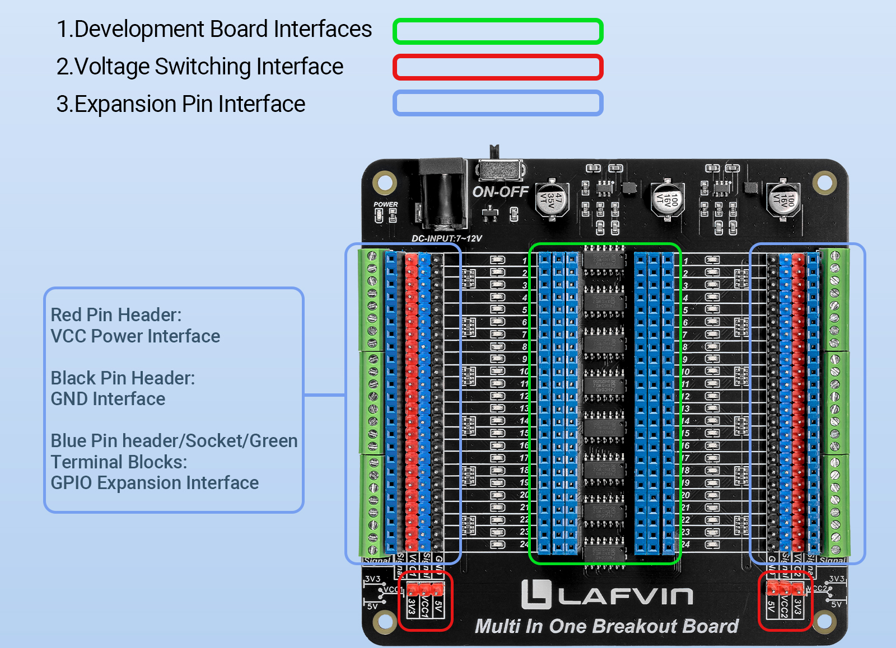
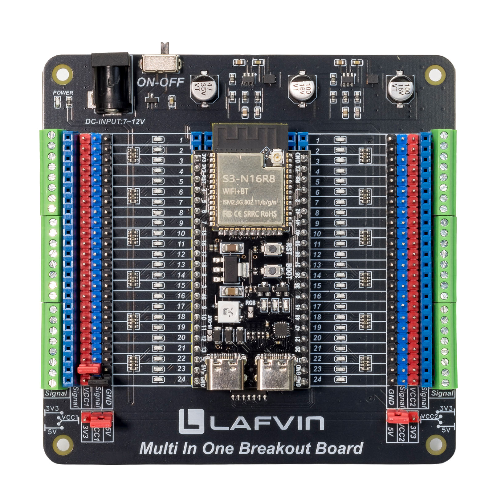
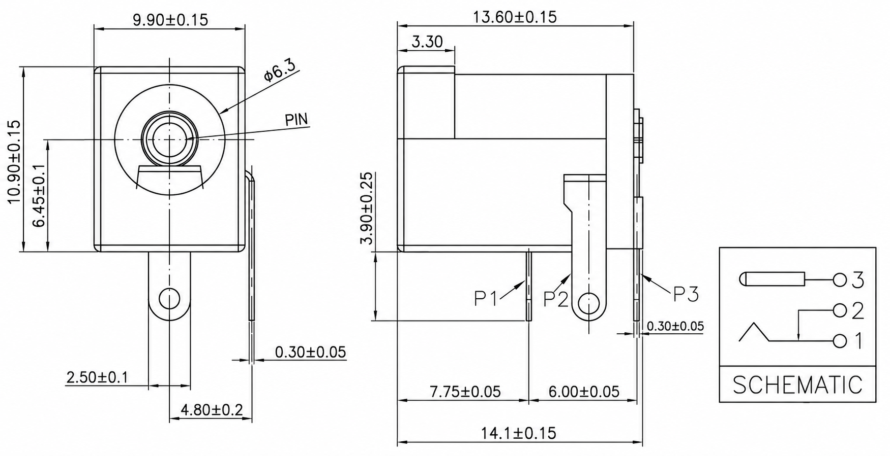
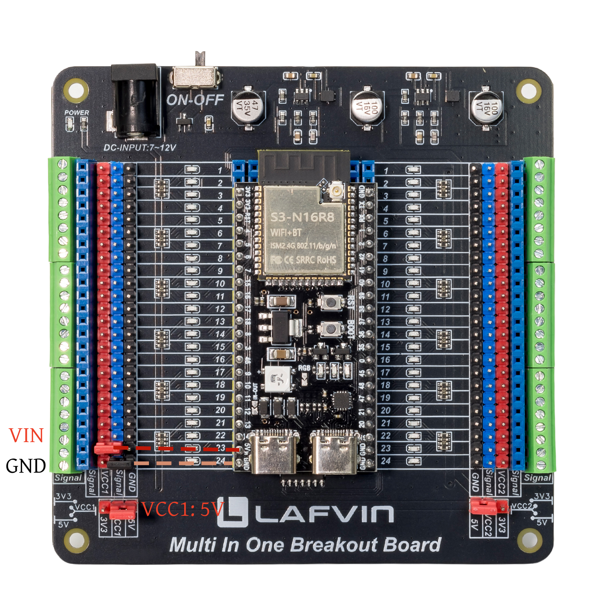

Quick Start Guide
This guide provides a simple and practical way to get started with the breakout board quickly.
Expansion Interface
The expansion interfaces are shown in the figure below:
{kind=link}

As shown in the figure, this breakout board is equipped with the following interfaces:
The onboard expansion interface provides full access to the development board’s GPIO, power, and ground lines, including:
GPIO signal interfaces
3.3V power supply
5V power supply
GND connection
To make experimental setups more flexible and convenient, the following interfaces are provided for wiring:
Screw terminal interfaces on both sides
Standard female header interfaces
Pin header expansion interfaces
Install Development Board
This breakout board features a universal design that supports various development boards with a standard 100mil (2.54mm) dual-row pin layout and widths ranging from 600mil to 1000mil (15.24mm to 25.4mm); it is compatible with common platforms such as Arduino Nano, ESP32, ESP8266, and Raspberry Pi Pico.
To demonstrate its functionality, we will use a 900mil-wide ESP32-S3 development board.
{kind=link}

As shown in the figure, when installing the development board, ensure that the board’s pins are securely aligned with the breakout board’s female headers. Otherwise, poor contact may occur, affecting the device’s normal operation.
Attention
Please handle the development board with care during installation. Forcing the removal or installation may cause the pins to bend or even become damaged.
There are no restrictions on the mounting orientation or location of the development board; you are free to choose how to install it.

Power Supply Method
Connect to an external power source.
The external power input port of the all-in-one breakout board uses a DC005 connector; its dimensions are shown in the figure below.
{kind=link}

Attention
When connecting the power cable, please ensure you distinguish between the positive and negative terminals; for this breakout board, the center pin of the DC connector is the positive terminal.
To ensure stable system operation, an input voltage of 9V or higher is recommended when using an external power supply. After connecting the power, turn on the switch, and the green power indicator light will turn on.
Attention
Equipped with reverse power protection circuitry, this design ensures the board is not damaged by improper external power connections.
If the breakout board fails to power the development board after connecting an external power supply, the issue is likely a polarity mismatch at the DC connector.
The positive and negative terminals may be reversed; please verify the DC connector specifications to ensure they correctly match the board’s requirements.
Power the development board
After connecting an external power supply to the breakout board in the previous step, voltage regulator chips are used to output 5V and 3.3V, respectively.
It supports switching between 3.3V and 5V power outputs using a jumper cap, making it compatible with a wide range of development boards and electronic modules.
The ESP32-S3 development board demonstrated here requires a 5V power supply for stable operation; therefore, the board can be powered by using jumper caps to connect the 5V supply to VCC1 and the corresponding GND pins.
{kind=link}

Attention
When using jumper caps to switch between 3.3V and 5V power outputs, please ensure that the jumper caps are securely connected to avoid poor contact, which may lead to unstable operation of the development board.
If the development board fails to power on after connecting the external power supply, please check whether the jumper caps are correctly positioned on the 5V output pins and the corresponding GND pins.
The steps for using other development boards are the same as those described above; you simply need to correctly identify the power pins on the board.
Summary
This guide shows how to use the breakout board quickly: install the development board, connect power correctly, and use the expansion interfaces for easy prototyping and testing.